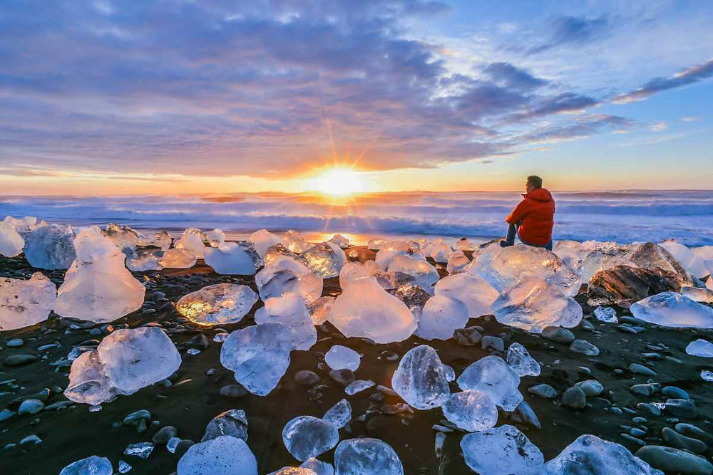

Travel
Iceland
Geographical Location: Iceland
Diamond Beach, located in Iceland, is a stunning natural attraction known for its unique beauty. It gets its name from the glistening icebergs that wash up on its black sand shores from the Jökulsárlón glacier lagoon.
This picturesque location offers visitors the chance to witness the striking contrast between the crystal-clear icebergs and the dark volcanic sands. The icebergs, which often sparkle like diamonds in the sunlight, create a mesmerizing sight. Safety Concerns at Iceland's Diamond Beach.
Photo Gallery

Vatican ,Europe

Geographical Location: Vatican City
Paragraph One about the locatio
Vatican City, a city-state surrounded by Rome, Italy, is the spiritual and administrative focal point of the Roman Catholic Church. Home to architectural and artistic marvels, it carries a history rich with spirituality and exquisite artistry. Visitors can start their journey at the St. Peter's Square, which stands as a testament to masterful architecture and the deep-rooted history of the church.
The Vatican boasts an array of stunning sites that captivate the eye and nourish the soul. From the iconic spiral staircase in the Vatican Museums to the breath-taking paintings in the Athenian academy, the heritage it harbors is indeed immense. Even a glimpse of the city from the waterfront offers a panoramic that encapsulates the spirit and grandeur of Vatican City, presenting an ethereal view that evokes a sense of tranquility and reverence.
Photo Gallery


London, United Kingdom

Geographical Location: London
Paragraph One about the locatio
As one of the most iconic cities in the world, London carries a rich history that is matched by its continuous growth and evolution. A powerhouse of culture, politics, and finance, it stands as a city where the past and present exist harmoniously side by side. From the ancient towers that narrate tales of a regal past to modern architectural marvels that reach for the skies, London offers an unrivaled blend of history and modernity.
Photo Gallery

New York

Geographical Location: NYC, NY, United States, North America
New York City thrives as a vibrant tapestry of cultures, languages, and experiences. Its streets pulse with energy, reflecting the city's boundless diversity. From the rhythmic beats of street performers in Times Square to the aroma of diverse cuisines wafting through neighborhoods, NYC's lively atmosphere encapsulates a living, breathing microcosm of the world.
From the iconic skyline to the bustling streets, it's a place where dreams are both pursued and realized. The city's fast-paced lifestyle is balanced by its diverse communities, offering a unique blend of cultures, cuisines, and experiences around every corner. Amid the hustle and bustle, there's a sense of constant motion and an electrifying energy that makes life in the Big Apple truly extraordinary.
Photo Gallery